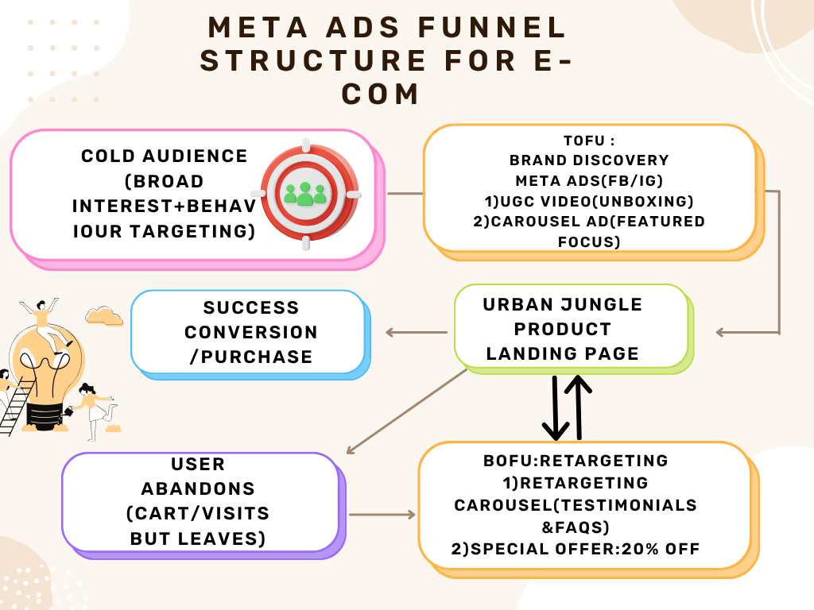
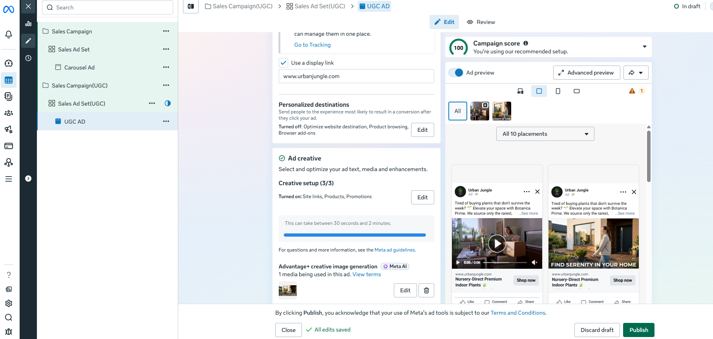
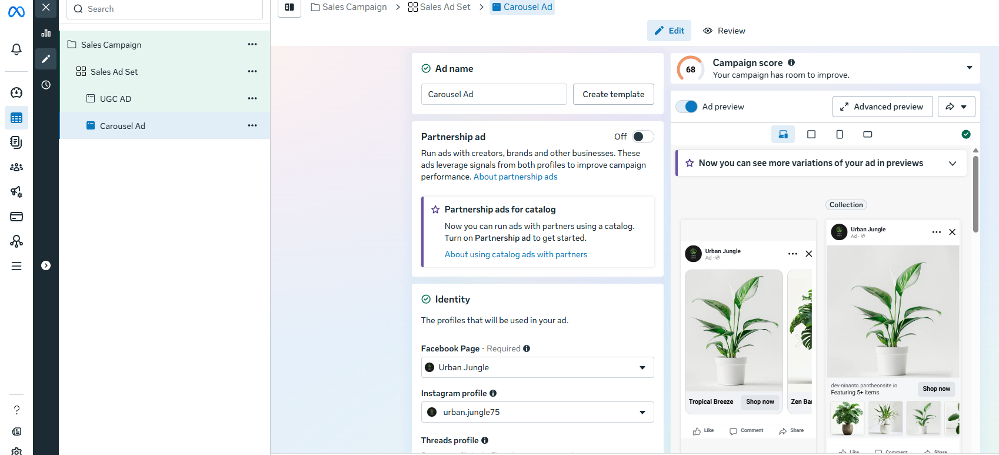

🔴 The Problem
Developed a full-funnel Meta Ads architecture for "Urban Jungle" (a concept brand selling high-end, rare, and premium indoor plants). The primary goal was to drive direct e-commerce sales, establish a profitable Return on Ad Spend (ROAS), and overcome consumer objections regarding live plant shipping.
🟡 The Solution
Strategy & Execution:
- Audience Architecture: Segmented the Top of Funnel (TOF) into high-income home decor enthusiasts, urban apartment renters, and niche indoor gardening interests (e.g., Monstera lovers, Biophilic design).
- Campaign Structure: Utilized Advantage+ Shopping Campaigns (ASC) to efficiently scale winning creatives, supported by a structured retargeting campaign for warm audiences.
- Trust-Building Mechanics: Implemented an "Arrives Alive Guarantee" heavily featured in the Bottom of Funnel (BOF) copy to eliminate purchase hesitation.
- Creative Testing: Deployed a mix of educational Reels (plant care tips) and aesthetic lifestyle images showing the plants in modern, well-designed homes.

🟢 The Results
Hypothetical KPIs & Tracking Metrics:
- Primary: Cost Per Purchase (CPP) and Return on Ad Spend (ROAS).
- Secondary: Average Order Value (AOV) via upsell bundles (e.g., plant + premium ceramic pot), and Link Click-Through Rate (CTR).

